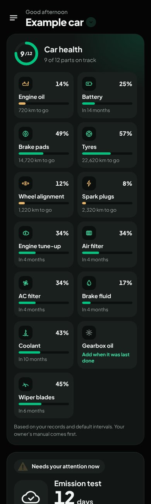

MotorPal
MotorPalThe road safety
opportunity:
a business case.
Sri Lanka is moving vehicle roadworthiness from a once-a-year formality to a regular, enforced test, starting with passenger transport. Road deaths remain high. This paper sets out why that makes MotorPal more needed, who will pay for it, and what we should build next.
In one page
Your vehicle carries the people closest to you. Keeping it roadworthy is not only a legal box to tick; it is a duty of care. MotorPal makes that duty simple.
~2,700people killed on Sri Lankan roads in 2025 (police)
~230deaths a month in 2026 so far
3 moor 5,000 km: new test cycle for passenger transport
~20%of vehicles said to get a thorough test today
What is changing
- New Motor Vehicles (Inspection) Regulations, approved by Cabinet in August and by Parliament in September 2026, require regular roadworthiness tests for passenger, school, office and hired tour vehicles.
- The Transport Minister described the cycle as every 5,000 km or every three months.
- The Department of Motor Traffic plans roadworthiness testing for vehicles more widely, reported as early 2027 in one report and as a certificate replacing the emission test from 2028 in another.
Why it matters to MotorPal
- Owners will need to know when a test is due, keep the vehicle test-ready, and show records. That is exactly what MotorPal does.
- Passenger transport operators (school vans, office vans, tour vans) face the test first and often: a clear, paying customer group.
- Private owners are likely to follow. Building the habit now puts MotorPal in their phone before the rule arrives.
The opportunity in one line
Make roadworthiness a habit, not a crisis: MotorPal tracks every part that wears out, counts down every test and renewal, and keeps the proof, for families and for the operators who carry other people’s children.
1The problem: a safety gap on Sri Lankan roads
Road deaths stay high
| Period | What was reported | Source |
|---|
| 2024 | About 2,400 to 2,500 deaths (reports differ) | Sri Lanka Police via press |
| 2025, full year | 2,562 fatal accidents and 2,710 deaths, later revised to 2,597 fatal accidents and 2,746 deaths | Police spokesman; DIG for Traffic (News 1st) |
| 2026, 1 Jan to 15 Nov | About 2,414 deaths, roughly 230 a month; motorcyclist deaths over 1,000 and pedestrian deaths over 800 | Expert Committee on the Prevention of Road Traffic Accidents |
Figures come from press reports of police and committee briefings and do not always agree. They should be checked against official police statistics before use with investors or the public.
Most vehicles are rarely checked properly
Stakeholders pushing for mandatory inspection said in 2025 that only about 20 percent of vehicles undergo a thorough test. Officials have also warned that some owners fit borrowed parts just to pass a test and remove them afterwards. Recent coverage (Sunday Times, 1 November 2026) reports that a fitness-test drive exposed a spare-parts problem; we could not open that article from here, so its details should be read and confirmed.
Be honest about the cause
Police records attribute most crashes to speeding, drink-driving, fatigue and drugs. Recorded vehicle defects such as brakes and tyres are a small share in police data (a few percent at most), though likely under-recorded. So MotorPal should not claim it will stop accidents. Our honest message is narrower and stronger: a well-kept vehicle removes one avoidable risk, and keeping it that way is part of caring for the people in it.
What owners lack today
- No simple way to know when brakes, tyres or a tune-up are due.
- Records scattered or lost, so nothing to show an inspector or buyer.
- No idea what a test will check, so problems show up on test day.
What operators lack
- A test every three months or 5,000 km means many deadlines a year per vehicle.
- Parents and employers want reassurance the van is safe.
- Missing a test could take a vehicle, and its income, off the road.
2The opportunity
Regulation creates the “why now”. Road safety creates the emotion. MotorPal already has the engine to serve both.

MotorPal already does the hard part
- Car health tracks 13 parts that wear out: engine oil, battery, brake pads, tyres, wheel alignment, spark plugs, engine tune-up, air filter, AC filter, brake fluid, coolant, gearbox oil and wiper blades.
- The deadline chain counts down the emission test, insurance and revenue licence. A roadworthiness test slots straight into it.
- Your records keep service history, part changes and warranties with dates, mileage and photos: proof for an inspector, an insurer or a buyer.
- The lights guide and Ask explain warnings and suggest what to ask, always pointing brakes and tyres to a professional check.
The duty-of-care message
“It’s not just your vehicle. It’s who’s in it.”
Your children on the school run, your parents on a temple trip, your colleagues in the office van. Keeping the vehicle roadworthy is how you look after them. MotorPal makes it easy to do, and easy to prove.
Tone: caring and calm, never fear or blame. No crash imagery. Always alongside a simple next step.
3Who will use it, and who will pay
| Segment | Their need | How MotorPal earns |
|---|
| Families and private owners | Peace of mind, fewer surprises, ready when wider roadworthiness testing arrives. | Free core app (the habit). MotorPal Plus for AI review, photo reading and backup. |
| School van operators | A test every three months or 5,000 km; parents’ trust; no days off the road. | MotorPal Fleet subscription per vehicle: test countdowns by date and km, a pre-test checklist, records ready for inspectors, and an optional “safety status” parents can see. |
| Office, staff and tour van operators | The same test cycle; employers and tour clients want proof of safety. | Fleet subscription; shared records with the employer or agent, by owner consent. |
| Garages and test centres | Repeat customers; trusted work records; fewer failed tests. | Partner listing and “garage-confirmed” records (Phase 2). |
| Insurers | Lower claims from better-kept vehicles; verified maintenance. | Opt-in referrals and, later, records the owner chooses to share. |
Why passenger transport is the beachhead
- Mandatory and frequent: about four tests a year per vehicle creates a real, recurring need.
- Clear buyer: owner-operators make the decision and the cost is small next to a lost day’s earnings.
- Word of mouth: school van drivers are known to every parent at the school gate. Every safe van is an advert to families.
- Bridge to families: parents who see a van’s safety status are natural MotorPal users for their own vehicle.
Segment sizes (number of school vans, office vans and tour vehicles) still need to be sized from National Transport Commission and provincial authority data. Prices are to be tested with real operators.
5Risks, and how we handle them
| Risk | How we handle it |
|---|
| Rules and dates change or differ between reports | Show the rule we use, say “check the official notice”, and update centrally. Confirm against the Gazette and DMT before launch. |
| Over-claiming safety | Never say MotorPal prevents accidents. Say it keeps the vehicle on track and the proof in one place. It explains and suggests; it never diagnoses. |
| Fear-based marketing backfires | Lead with care for family, calm tone, one clear next step; no crash images. |
| Sharing data with parents or employers | Only with the owner’s clear consent, after accounts exist and a Personal Data Protection Act check. |
| Operators may not want more admin | Make it faster than paper: photo first, typed numbers, reminders that save a lost day. |
Sources
Gathered from news reports and search results on 22 November 2026. The three articles you sent could not be opened from this session (the sites are blocked here), so their details were taken from other coverage of the same news and should be read directly.
- Sunday Times, 1 Nov 2026: “Vehicle fitness test drive exposes spare parts problem” (sundaytimes.lk/261101/news/…662498)
- Newswire, 22 Oct 2026: “New vehicle fitness test every 3 months or 5,000 km? DMT reveals plans” (newswire.lk)
- Daily Mirror: “Vehicle fitness tests to become mandatory for passenger transport” (dailymirror.lk/…/108-349856)
- Daily Mirror, 4–5 Aug 2026: “New roadworthiness tests for passenger vehicles approved” (dailymirror.lk/…/108-347360)
- Newswire, 8 Sep 2026: “Mandatory Road Worthiness Test proposed for passenger transport vehicles”
- News 1st, 23 Aug 2026: “Roadworthiness tests to replace emission tests from 2028”
- Government Gazette 2489/22, 19 May 2026 (documents.gov.lk)
- The Star / News 1st / Ada Derana, Jan–Feb 2026: 2025 road deaths (2,710; revised 2,746)
- News 1st, 7 Jul and 13 Aug 2026; Expert Committee on the Prevention of Road Traffic Accidents, Nov 2026: 2026 road deaths
- Daily Mirror, 2025: “Key stakeholders push for mandatory vehicle inspections to curb Sri Lanka’s deadly road accident crisis” (about 20% thoroughly tested)
- Department of Census and Statistics, police accident microdata: vehicle defects recorded in accidents